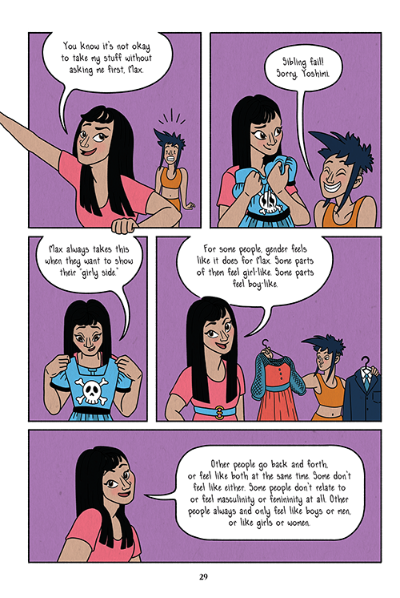

Wait, What? It's Finally Here?!? (It is!)
by
It brings a loving, essential lens to matters of heart and soul, offering a roadmap not only to physical changes, but the complex social and emotional terrain of consent, crushes, and identity. — Rabbi Danya Ruttenberg, Nurture the Wow
This dream team of creators came up with a book that is not only accessible but totally enjoyable to read! I’m so excited to see Wait, What? in every library, school and doctor’s office in 2019! — Archie Bongiovanni, A Quick & Easy Guide to They/Them Pronouns
Isabella Rotman and I first started dreaming up a comic and activity book for pre-teens and very young teens in the fall of 2014, while Izzy was also working on the first version of Not On My Watch. Around the same time, I got into the thick of the second edition of S.E.X., work I was doing for much of the next year, and Izzy worked on new illustrations for it, too. Then chronic pain and illness I'd long struggled with began to get bad, and soon enough went from bad to worse to some-of-my-spine-literally-crumbling-and-collapsing epic bad. I was first away from the project due to my inability to do much of anything, then for a big surgery and recovery.
We made our way back to it in 2017, and in fall of 2018, partnered with publisher Oni/Limerence Press, and our editor, Ari Yarwood. We then all worked our tushes off to get it all the way done, which is why today -- AT LONG LAST! SOUND THE TRUMPETS! DOO DO DOO DOOOOOO! -- we can finally present you with Wait, What? A Comic Book Guide to Relationships, Bodies and Growing Up, a book we love and loved making very much.
I'm so glad that throughout this process, the book has not only been able to keep being all we wanted it to be when we first conceived it, but has become even better than we'd first imagined. I got to make this book with one of my favorite creative collaborators and friends, and we both also got to work with Luke Howard, a great colorist and awesome human, and our team at Oni/Limerence, and now we get to share it with all of you.
At the very start of all this, we had in mind making something of a sex ed prequel: some of the more foundational, social information and context so often left out of most sex ed, that would give a young person a good start on things no matter what kind of sex and relationships education they got later.
We'd hoped to do something that could show young people how they could talk well with each other about so much of the tricky stuff that's happening or showing up in a bigger way for them at this time of life. Things like: changing bodies and relationships, crushes, healthy boundaries, identity, safety, consent, crummy cultural ideas that can really hurt people and mess us all up and how to find and keep -- and themselves give -- good support. I've seen young people do this with each other firsthand, and we both wanted to show young people and adults what it can look like.
We wanted it to be the kind of book that Izzy and I would actually make as the team we are: something warm and sweet, real and sensitive, open and honest, and fun and full of little things we love, like our pets and our pet peeves, and things we geek out on, like rollerskating, what garbage virginity constructs are, and a certain platypus we just know you're going to love (I even got to name a character after Sonia Sotomayor!).
We also very much wanted to be sure to create something that was highly inclusive, which is still sadly hard to find in books about puberty, sex and relationships. I believe we've even been able to release one of the first -- if not the first --- books for this age group that talks about puberty without assigning gender to bodies or parts, and were able to bring other kinds of inclusion in that are really important to us both.
We truly love all our characters -- oh my goodness, sooooo muuuuuch -- and every section, but I wanted to share one with you as a treat for our debut that we're both particularly excited about, and not just because it includes you-can-really-cut-them-out paper dolls. But also because of that.
I love the way this section (text and descriptions are at the bottom of the page for those using screen readers) talks about and shows gender identity and expression, and I particularly love the relationship between Max and Yoshimi: you can tell how Max's sister probably had and has a whole lot to do with how confident and safe Max feels in their identity, and how Yoshimi's big sister energy is very clearly appreciated and felt by all the friends (a thing we suspect some of the younger siblings of Scarleteen readers may also experience).
I like every other section of the book, too, but I don't want to give it all away (I do, actually, but I know I'm not supposed to)! So, here's more of the scoop on the book as a whole, and some places to order it online if you don't have access to a copy yet at the library or can't get to a bookstore in person who's got it.
We hope you'll love it as much as we do, but what we hope even more is that you'll give it to a young person in your life and that they'll love it as much as we do, and maybe even just a little more.
From our publisher: From Heather Corinna, founder and director of Scarleteen.com, and Isabella Rotman, cartoonist and sex educator, comes a graphic novel guide that covers essential topics for preteens and young teens about their changing bodies and feelings.
Friends Malia, Rico, Max, Sam and Alexis talk about all the weird and exciting parts of growing up! Using comics, activities and examples, they give encouragement and context for new and confusing feelings and experiences. This supportive group of friends are guides for some tricky subjects.
Inclusive of different genders, sexualities, and other kinds of identity, Wait, What? covers important topics like:
- Bodies, including puberty, body parts and body image
- Sexual and gender identity
- Gender roles and stereotypes
- Crushes, relationships, and sexual feelings
- Boundaries and consent
- The media and cultural messages, specifically around bodies and sex
- How to be sensitive, kind, accepting, and mature
- Where to look for more information, support and help
A fun and easy-to-read guide from expert sex educators that gives readers a good basis and an age-appropriate start with sex, bodies and relationships education. The perfect complement to any school curriculum.
A wonderful guide to topics adolescents are curious about, presenting information in relatable, gender-inclusive text and clever illustrations. This is the book adolescents—and their parents—have been looking for. — Melanie Davis, PhD, CSE, Our Whole Lives Program Associate
Groundbreaking sexuality educator Corinna, founder of the website Scarleteen, works with cartoonist Rotman to bring her knowledge and experience to this slim but mighty guide…This book consistently puts the needs of its readers first, meticulously working to emphasize gender diversity, individuality, and the messiness of adolescence….Body parts are intentionally ungendered, sexual orientations are shown as fluid and joyful, and there is a constant emphasis on the importance of friendships and mutual support. While brief, this guide manages to cover crucial topics thoroughly and humorously, reassuring readers that while all of this is a big deal, it’s something they can handle. The cartoony illustrations are appealing and fun, the book includes interactive activities such as word searches and crossword puzzles, and there’s a fairly thorough glossary in the back. This extremely modern guide to growing up excels in its field. – Kirkus Reviews
Wait, What? is straightforward and clear, exactly what’s needed to help kids develop authentic awareness and conversation about bodies, relationships, feelings and sexuality. — Peggy Orenstein, Girls & Sex: Navigating the Complicated New Landscape
You can get it:
- from our local favorite, Women and Children First, here
- from other independent booksellers via IndieBound here
- from Amazon here
- or from Barnes and Noble here
Text and description of featured pages:
1) Paper dolls of Max, includes jeans, roller skates, jacket, engineer boots, Weird Platypus t-shirt, bandana, button-down, witch hat, powdered wig and a dress.
Max: Everyone should be able to wear what they like and feel comfortable in, whatever their gender.*
(at bottom of the page) * Gender is basically our own internal sense — not what anyone else thinks or says about it, but how we feel — of being a girl, a boy, both or neither, and the unique ways we feel like or express those feelings. For more definitions of terms we use in this book, check out the glossary in the back!
2) Max’s sister, Yoshimi, reaching into the last frame to take a dress back from Max: You know it’s not okay to take my stuff without asking me first, Max.
Max: Sibling fail! Sorry, Yoshimi.
Yoshimi, holding up the dress: Max always takes this when they want to show their “girly side.”
Yoshimi: For some people, gender feels like it does for Max. Some parts of them feel girl-like. Some parts feel boy-like.
Other people go back and forth, or feel like both at the same time. Some don’t feel like either. Some people don’t relate to or feel masculinity or femininity at all. Other people always and only feel like boys or men, or like girls or women.
I don’t feel like I have a “boy-side” or like I have “sides” at all. All my sides feel girly. There’s nothing right or wrong about how Max experiences gender, how I do, or how girls like Malia or Alexis do. All those ways are right ways, because they all feel right to each of us!
Yoshimi, popping "It's a Boy" and "It's a Girl!" balloons with a pin: There’s nothing more right or real about how Alexis and Malia are girls than how I am just because when they were born a doctor said they were girls, and when I was born, a doctor said I was a boy.
Yoshimi, arm in arm with Alexia and Malia: Trans girls like me — whose sense of gender isn’t the same as the sex a doctor said I was when I was born, that's all — are just as real as girls like Alexis and Malia. That's also true about trans boys.
Yoshimi, Alexia and Malia, with Max photobombing in front: All three of us are girls because that’s how we all feel and that's what we all say we are. Max is…well, whoever Max is today, because that’s what they say.
All illustration © Isabella Rotman and Wait, What? excerpts © Isabella Rotman and Hetaher Corinna, 2019. All Rights Reserved.